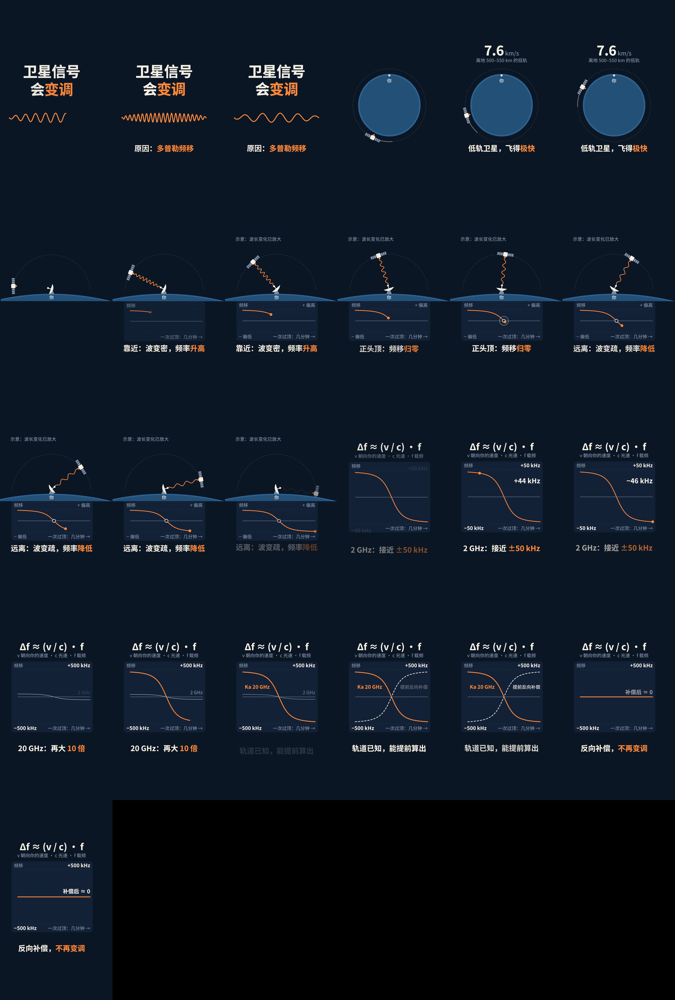
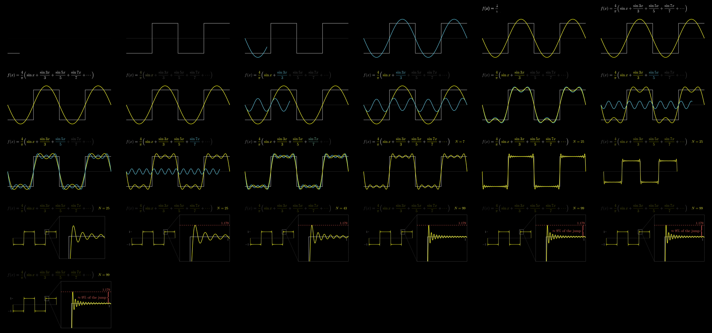
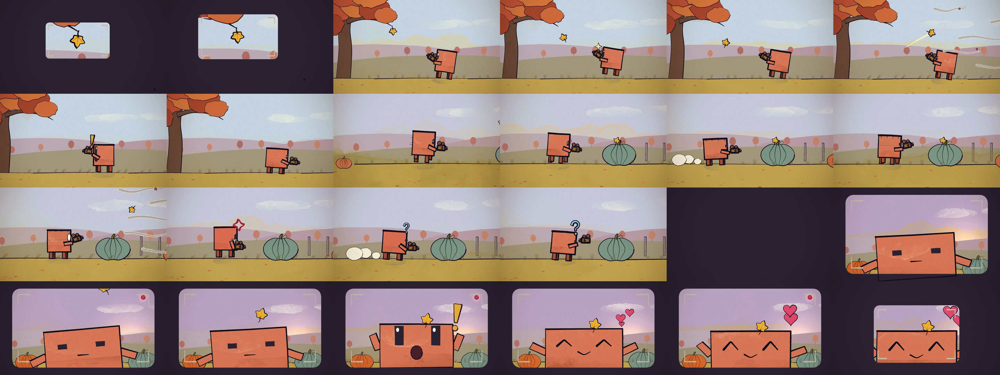
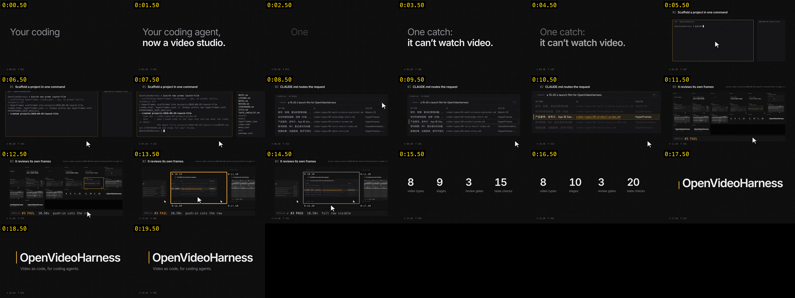

Idea first
Two or three concept cards, each with one frame and a hook, before a line of code. It names what every other video on the topic looks like, and steers away.
playbook/12-ideation.mdA video workbench for Claude Code
Not more tools. Know-how.
Ask for a film in one sentence. Claude takes it from the idea to the storyboard, script, style, sound and final cut, checks its own work, and stops for your sign-off on the way.
Every star is a film: the 31 style samples, in orbit
01 Get started
Needs macOS or Linux, Node.js 22+, Chrome, FFmpeg, Python 3 with uv, and Claude Code or Codex.
Times are for a 30-second film. Say "quick" and it runs straight through.
02 Why we built it
Claude Opus 5.5 writes video as code, and it has taste: in motion, in type, in pacing. The community has shared hundreds of these films; one collection alone holds 389, with their prompts.
Great engines already exist, like HyperFrames and Remotion. But an engine only turns code into frames. It doesn't give you the idea, the storyboard, the script or the style, and it can't tell you whether the film is any good.
So I talked it through with Claude, and we built the missing layer: the whole workflow, from idea to final cut.
drives ↓
03 What it adds
Two or three concept cards, each with one frame and a hook, before a line of code. It names what every other video on the topic looks like, and steers away.
playbook/12-ideation.mdScience shorts, 3Blue1Brown-style explainers, launch films, music videos, data stories, paper talks, hand-drawn shorts, meme edits, and edits of your own footage.
video-types/Direction, storyboard, first draft. Name anything else you want to own: the hook, the style, the voice, the cover. Or say "quick" and it runs straight through.
CLAUDE.md · director modeClaude can't watch video. So it reads contact sheets against a 20-point checklist, measures the audio, and a second Claude with a fresh context scores the draft on 8 points.
templates/TASTE_CHECKLIST.mdChinese and English voiceover, two-language subtitles, a score and 21 sound effects written as code, every cue on its frame, mixed to −14 LUFS.
bin/vh tts · music · sfx · mix · qaNo randomness, no clock, no state carried between frames. Same t, same pixels, so any frame renders alone, in parallel, in any order, and can be checked. Drag the slider, then render the frame again.
CLAUDE.md · hard rule 1A style library to borrow from, each with a rendered sample. And when a shot needs real glass or a million stars, Claude drives Blender from Python.
styles/ · engines/blender.md04 Architecture
video-types/9 workflowsplaybook/13 know-how docsstyles/31 stylesrecipes/24 shot recipestemplates/11 project filescases/ showcase/case studies, filmsbin/vhnew · tts · music · sfx · mix · qa · check · review · deskprojects/<date>-<slug>/you decideClaude checks itselfa request, moving through05 The intro film · 103 s · with sound
The opening is path-traced in Blender, driven by Python: 1.18 million stars, 475 frames. HyperFrames and Three.js take over from 15 s. The score and 124 sound effects are code too.
checking the film's source…
06 Films it made · hover to preview, click for sound
Claude can't watch video. It reviews contact sheets: frames tiled with their timecodes.

contact sheetWhy does a low-orbit satellite's signal change pitch?HyperFrames · 24.8 s · 1080×1920 · Chinese voice, two-language subtitles

contact sheetBuilding a square wave from sine wavesManim · 25 s · English narration

contact sheetClawd tries to film a falling autumn leafp5.brush · 12 s · no words, score and foley

contact sheetA short launch film for OpenVideoHarness itselfHyperFrames · 20 s · a sound for every move
07 Style library · click one to hear it
Left alone, AI video drifts to one look: dark background, glow, glass cards. Each style here is a real 5-second render of the same content.
08 Who wrote it
claude/ branches, opened by Claude CodeI bring the taste and the decisions. Claude writes the rest.
projects/.tools/ci.sh before each push→a draft PR→I merge
09 In the wild
I post films made with OpenVideoHarness on Douyin (TikTok in China) and Bilibili.
From the announcement of this year's Nobel Prize in Physics to a published science explainer, made with the harness.
10 Contact
Star the repo, add me on WeChat, or send me a film you made with it.

WeChat QR not found: save it as docs/talk/img/wechat.jpg